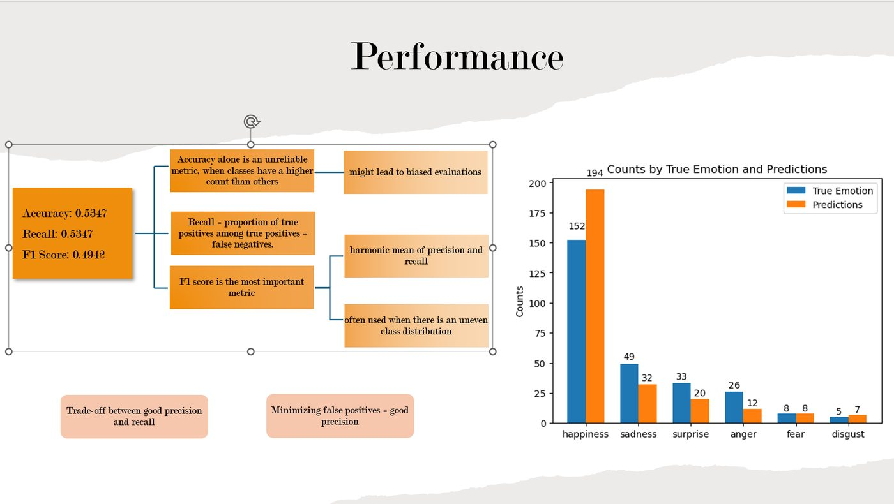
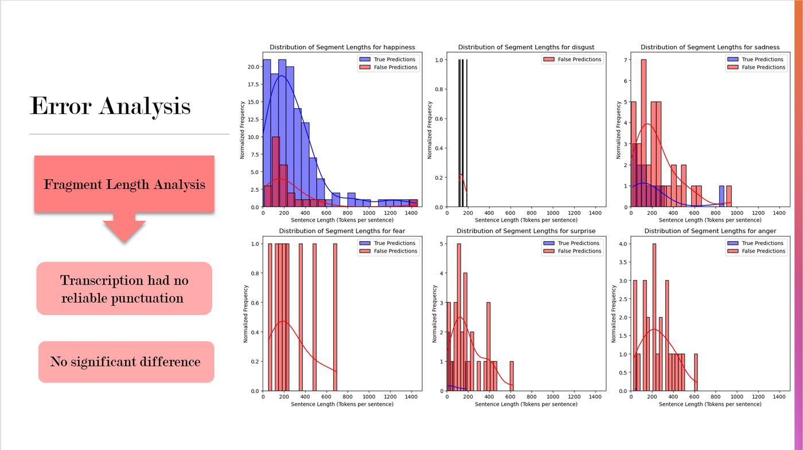

03 / from the project



// Banijay · 2024
NLP and machine learning for video content analysis
An emotion classification system for Banijay that uses NLP and transformer models to detect emotions in video content. The pipeline splits video into fragments, extracts text, and predicts the emotion of each fragment.
In collaboration with Banijay, we built a system to detect emotions from video content using NLP and modern machine learning. The final model used transformer-based techniques to push emotion-detection performance.

